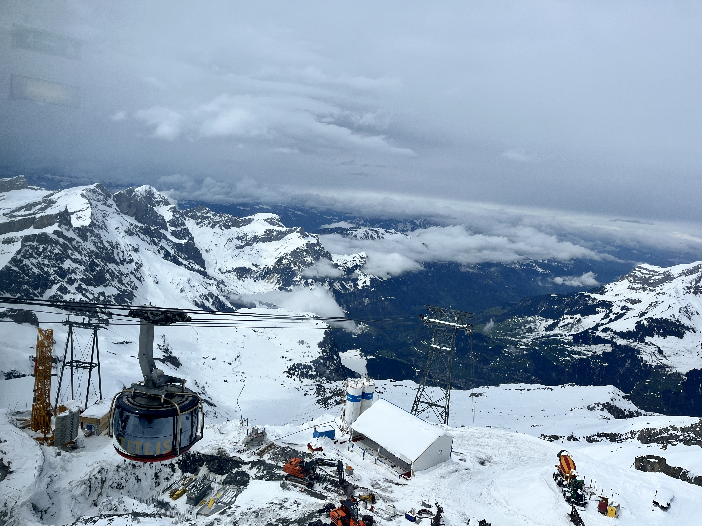
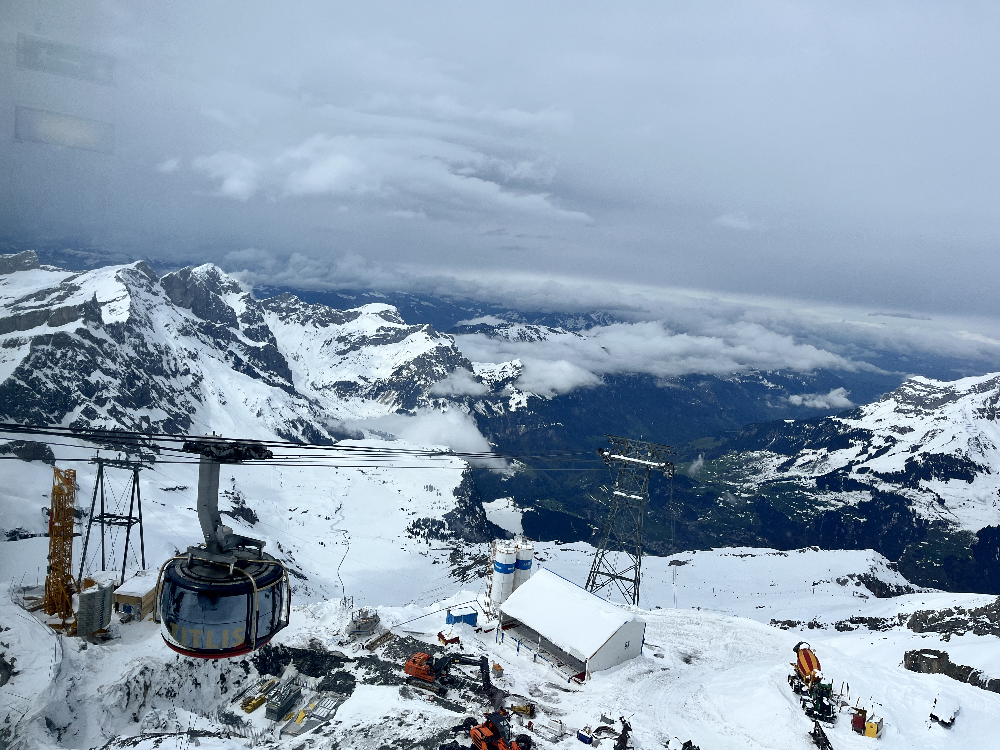
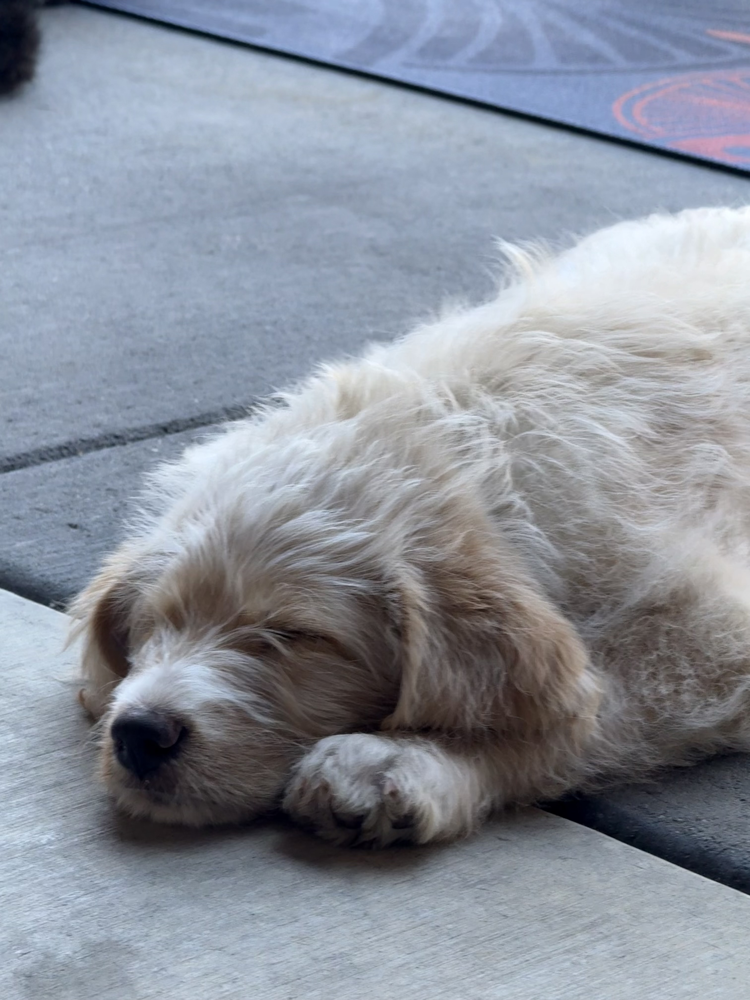
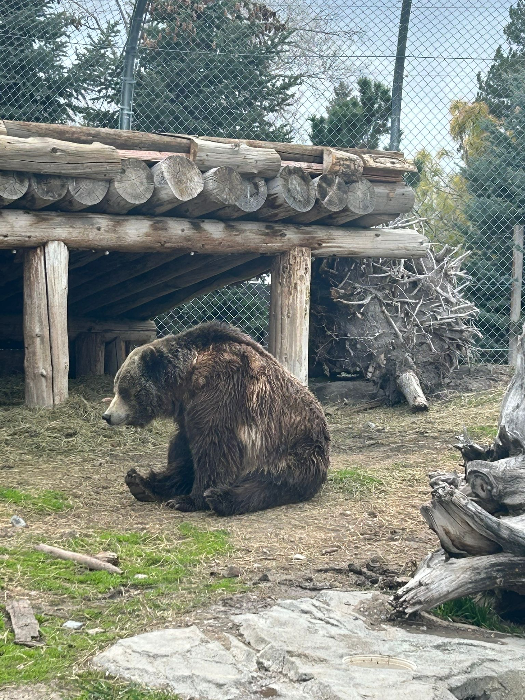
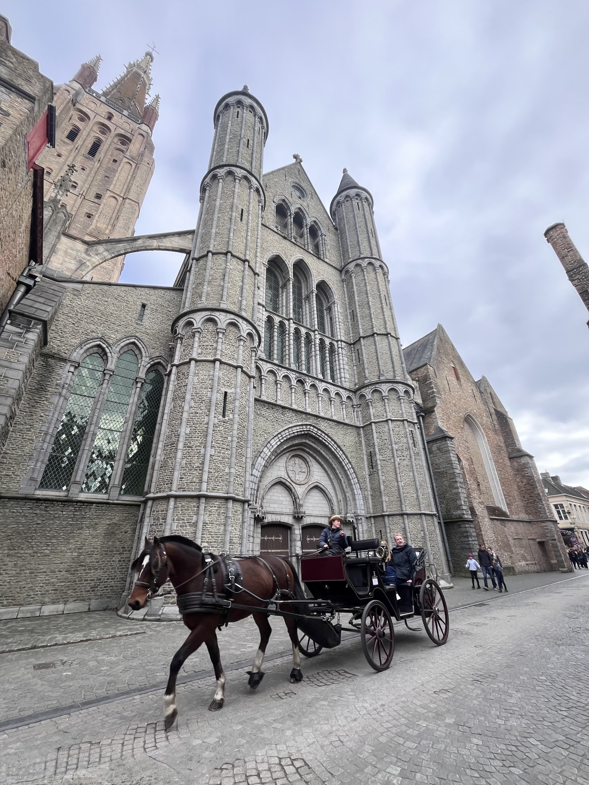
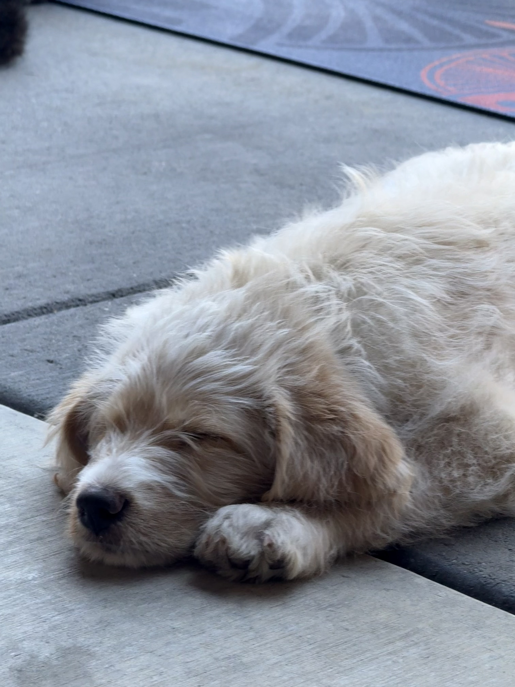
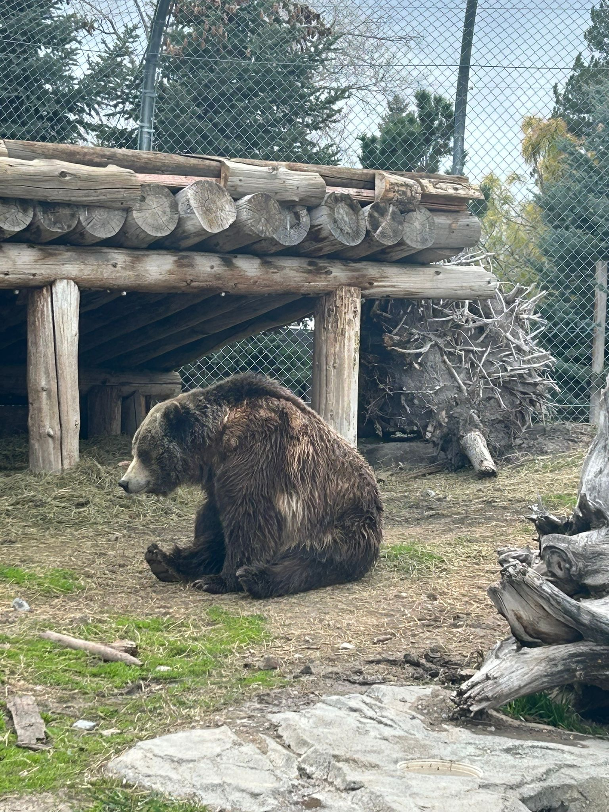
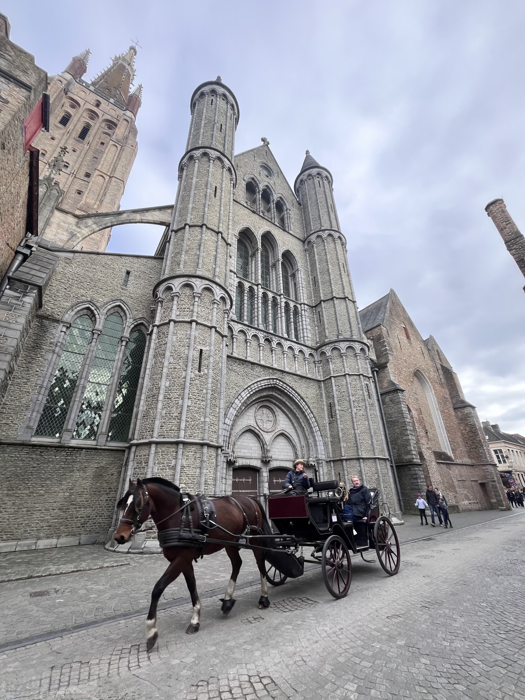
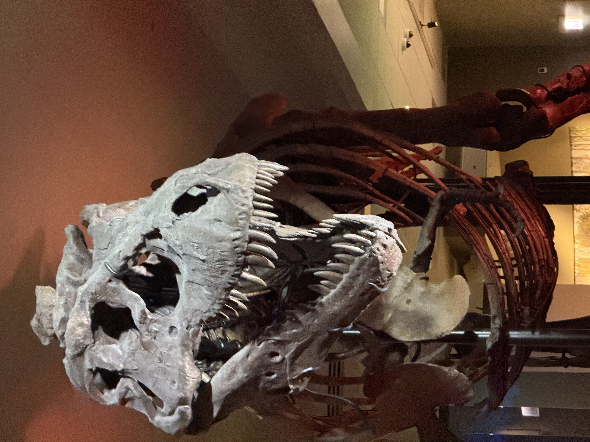
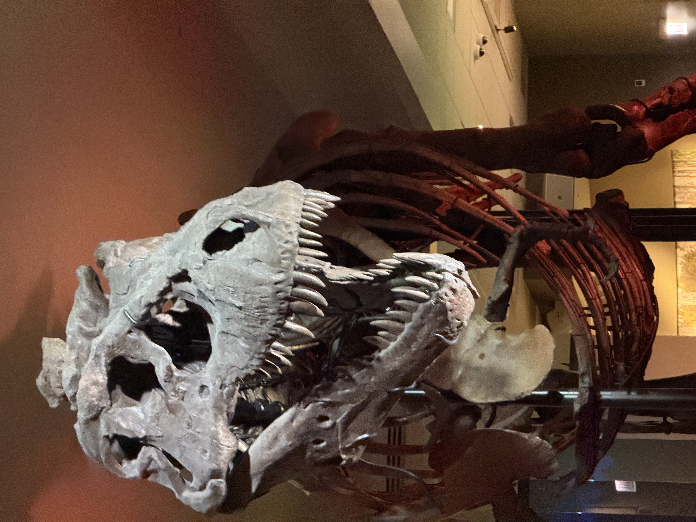

About me
↑Hi there!
My name is Pavani Kuppili, a third-year PhD student at the University of Utah, advised by Prof. Robert Ricci. My primary research interests are broadly in the areas of Programmable Networks, Data Center Networking, and Network Measurements. I am actively working on programming Tofino switches and FPGA-SmartNICs using P4. I collaborate with Prof. Michael Zink at the University of Massachusetts, Amherst, and Prof. Miriam Leeser at Northeastern University.
- Interests:• Programmable Networks • Datacenter Networking • Measurement • SmartNICs • Distrubuted SDNs • Network Offloading ML workloads
Events/Updates
↑- November 2025 - Excited to share that I will be serving on the ICPE ’26 Artifact Evaluation Committee!
- May 2025 - Returning to UMass Amherst for a second summer internship.
- November 2024 - Attended ICNP'2024 in Charleroi, Belgium and presented my first poster!
- October 2024 - Awarded IEEE ICNP'24 travel grant from Saint Louis University.
- August 2024 - Our Poster: TopoCloud: Getting Datacenter Network Experiments Into The Right Shape got accepted to ICNP 2024!
- May 2024 - Started summer internship at UMass Amherst. Excited to work on OCT-FPGA and P4 with Prof. Michael Zink!
- April 2024 - Attended EuroSys'2024 in Athens, Greece.
- April 2024 - Awarded travel grant for EuroSys'2024.
- January 2024 - Excited to share that I will be serving on the EuroSys 2024 Shadow Programme Committee!
- August 2023 - Started my PhD at the University of Utah with Prof. Robert Ricci!
Research
↑ I build high-performance, resilient datacenter networks by programming Tofino switch ASICs
and FPGA-SmartNICs in P4. I also have a soft spot for very large network logs—digging through them,
tweaking measurement knobs, and seeing what the data is trying to confess.
My research ideas include but not limited to: implementing ML models on SDN devices(eg., Tofino, BlueField SmartNICs)
and evaluate performance;
offloading ML workloads to SDN devices. For examples offloading certain aggregation tasks to SDN devices to
improve distributed ML training.
If you’re exploring anything in this space (or have a wild idea that might work),
I’m always happy to collaborate.
Publications
↑-
Poster: Topocloud: Getting Datacenter Network Experiments Into the Right ShapeICNP, 2024
-
Multi-attached network topology with different routing protocols and stub network resolution in OSPF routingMCCS, 2018
-
Design and Analysis of QoS based Optimized Novel Optical Network Emulator for WDM TechnologyICCS, 2019
Work Experience
↑University of Utah
Salt Lake CIty · August 2023 – PresentResearch Assistant - Flux Research Group
University of Massachusetts at Amherst
May 2024 – August 2024May 2025 – August 2025
Cloud Testbed Development Intern
Amazon Development Center, India(ICON)
January 2022 – July 2022Systems Development Engineer
- Designed automated scaling scripts in Javascript to address downtimes of Amazon Retail Website and could resolve over 70% of on-call tasks.
- Executed the 100% live migration of Amazon Retail Website across global regions from legacy load balancers to AWS ELBs.
Amazon Web Services, India(EC2 Linux)
May 2019 – January 2022Cloud Engineer
- Debugged a critical bug in AWS SSM Agent and collaborated with cross-functional teams to enable integration of Custom OS logs with CloudWatch; mitigated 100% Custom OS SSM logging errors.
- Resolved over 1000 customer cases, architecting multi-tier cloud solutions on AWS, optimizing resources, infrastructure costs, and performance.
- Troubleshot and resolved AWS EC2 level critical performance and application issues by re-configuring Linux operating systems on cloud using CPU, Memory, Storage, and Network metric analysis, and optimizing system utilization.
Skills
↑Programming
P4, Python, C, Bash, Shell, Java, Go, OpenMP, CUDA, MPI, JavaScript, MySql, HTML, CSS
Systems/Networks
Tofino, Vitis Networking P4, Xilinx Open-NIC-Shell, Linux, AWS, Docker, GitHub, Network Monitoring, Network Performance , Firewalls, Virtualization, OS Logging, Authentication, GNS3, Wireshark
ML
Core ML, Supervised learning, Ensemble methods, Neural Networks, Sklearn, Evaluation, JupyterLab
Honors & Achievements
↑- Artifact Evaluation Committee, ICPE 2026 — Florence, Italy, 2026
- Travel Grant, ICNP 2024 - Charleroi, Belgium, 2024
- Travel Grant, EuroSys 2024 - Athens, Greece, 2024
- Member ShadowPC, EuroSys 2024 - Athens, Greece, 2024
- Quarter Superstar AWS — Amazon Web Services, India, 2020
- AWS Solutions Architect-Associate — 2020
Course Work
↑- Machine Learning(CS 6350) - Spring 2025
- Advanced Computer Networks(CS 6480) - Fall 2023
- Software and System Security(CS 6956) - Spring 2023
- Software Verification(CS 6110) - Spring 2023
- Distributed Systems(CS 6450) - Fall 2022
- Parallel Programming(CS 6230) - Fall 2022
- Computer Architecture(CS 6810) - Fall 2022
Hobbies
↑
 

 





 
